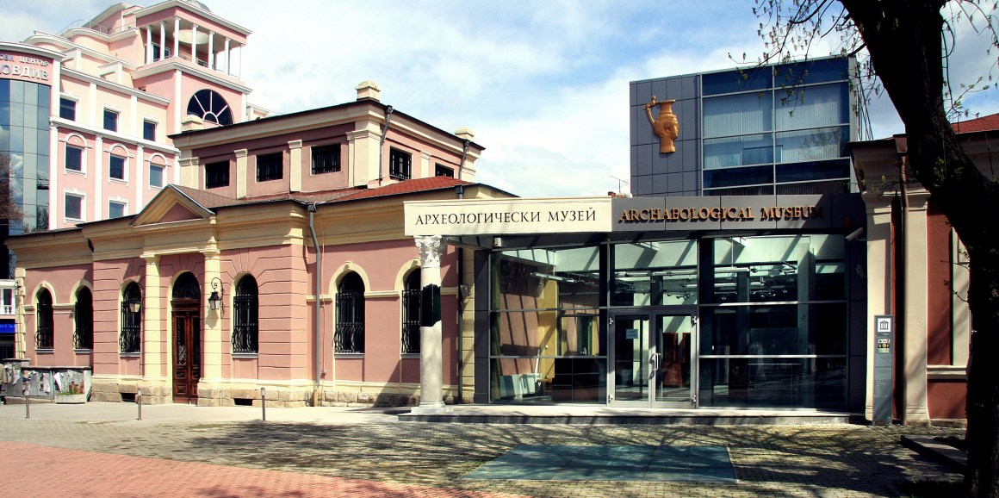
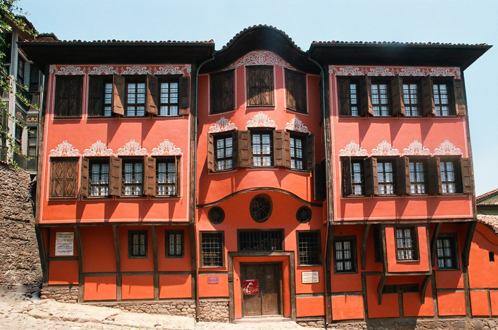
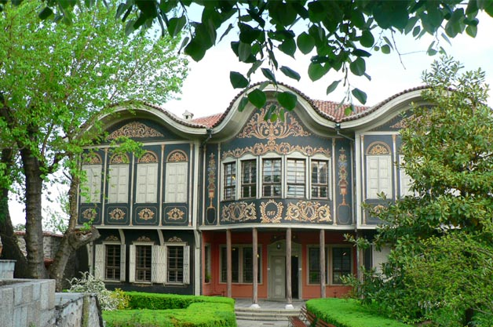

Музеи
Регионален археологически музей Пловдив

Регионалният археологически музей е специализиран музей за археология и история в Пловдив.
Разполага със седем основни колекции: „Праисторическо изкуство“, „Тракийско изкуство“, „Древногръцко изкуство“, „Древноримско изкуство“, „Средновековно изкуство“, „Възрожденско изкуство“ и Нумизматична колекция.
От 1 март 1883 г. музеят и библиотеката напускат конака на Исмаил бей и са настанени от директора Ил. С. Йовчев в „по-удобно за целта здание на сарача Еминаа Хаджи Неджибов“, което намирало се в северните склонове на Сахат тепе, до Евангелистката църква. От 1884 г. музеят и библиотеката са преместени отново, този път в къщата на Анастасаки Томиди на днешната ул. „Съборна“ № 33. Тази сграда (станала собственост на Пловдивския род Протохристови) е съборена при прокопаването на тунела.
На предвиденото място за областна библиотека и музей на днешния площад „Съединение“ е построена сградата за Областното събрание на Източна Румелия. Сградата е издигната от 1884 до 1885 г. по проект на известния италиански арх. Пиетро Монтани, но поради състоялото се Съединение на 6 септември 1885 г. остава незаета по предназначението си. На 11 януари 1886 г. директорът на музея Ил. Йовчев иска от Министерството на народното просвещение незаетата сграда да бъде предоставена за ползване от библиотеката и музея. На 24 февруари 1886 г. е получена телеграма, с която официално е разрешено преместване от 1 март 1886 г.
В периода 1995 – 1999 г. е разработен проект за ремонт и укрепване на сградата. През 2003 г. е разработен нов проект за цялостен ремонт и разширение на сградата на музея. От 2006 г. стартира изпълнението на този проект и изграждането на нова музейна сграда. Ремонтът приключва през 2010 година.
Регионален исторически музей

Историческият музей в гр. Пловдив е създаден през 1951 г. Той има за цел да съхрани и опази за поколенията културните ценности и историята на Пловдив и Пловдивския край от XV до XX век. Състои се от четири експозиции, разположени в различни сгради в централната част на града – „Българско възраждане”, „Книгоиздаване в България през втората половина на XIX и началото на XX век”, „Съединение на България 1885 г.” и „Музеен център за съвременна история”. Четирите колекции са събирани през различни периоди и са обединени през 1993 г.
Експозицията „Българско възраждане” се намира в Стария град, в една от най-представителните възрожденски къщи – къщата на Димитър Георгиади. Представен е периодът от падането на България под османско робство (края на XIV в.) до Освобождението (1878 г.). По-специално внимание е отделено на епохата на Възраждането (XVIII – XIX в.). Съхранени са лични вещи и документи, свързани с велики личности, дали своя принос за града. Проследено е и развитието на националноосвободителното движение срещу османската власт.
Експозицията „Книгоиздаване в България през втората половина на XIX и началото на XX век” е открита през 1975 г. Намира се в къщата музей „Христо Г. Данов”. Данов (1828 г. – 1911 г.) се счита за основател на българското книгоиздаване и основен снабдител на българските училища с учебници през Възраждането. В тази секция на музея се съхраняват над 5000 тома книги, уникални издания, географски карти и учебни картини и помагала, предмети от бита, лични вещи и кореспонденция на Христо Данов и неговото издателство. Направена е възстановка на класна стая от периода на Българското възраждане, както и на работния кабинет на видния пловдивски издател. Самата сграда на музея също е много интересна – пример за Пловдивска симетрична къща с богата орнаментика.
Музейната експозиция „Съединение на България 1885 г.” е разположена в непосредствена близост до площад „Съединение”. Помещава се в сградата, служела на Областното събрание на Източна Румелия (автономна провинция на Османската империя, създадена според условията на Берлинския договор от 13 юли 1878 г.). След Съединението на Източна Румелия с Княжество България (1885 г.) в нея се помещава Пловдивската народна библиотека. Експозицията е създадена през 1985 година в чест на 100-годишнината от Съединението на България. В същата година е изграден и паметникът, разположен на едноименния площад срещу сградата на музея. Експозицията представя интересния период от историята на Пловдив, когато той е бил столица на Източна Румелия.
Музейният център за съвременна история е част от Историческия музей от 1948 г. Разположен е в сградата на бивш офицерски клуб. Експозицията представя развитието на града от Освобождението (1878 г.) до края на 40-те години на XX век. В музея се съхранява и богата колекция от уникални японски кукли. Сбирката е наречена „душата на японската кукла” и е събрана със съдействието на Японската агенция за доброволци в чужбина.
Освен „Съединение на България”, всички останали експозиции се намират в архитектурния резерват Старинен Пловдив (Стария град). Обиколката им обогатява не само с исторически сведения, но и дава достъп на посетителя до уникалния дух на Българското възраждане с прекрасната архитектура и запазените улици и сгради.
Етнографски музей Пловдив

Регионалният етнографски музей – Пловдив, е вторият по големина в България специализиран музей от такъв тип. Помещава се в Куюмджиевата къща в Стария град, обявена за паметник на културата.
Богатата експозиция представя традиционната култура на Тракия, Родопите и Средногорието от периода на Възраждането (XVIII – XIX в.). В постоянната експозиция земеделието и животновъдството са представени като основни поминъци на населението от региона. От традиционните занаяти тук са намерили място едни от най-характерните за периода на Възраждането – абаджийство (производство на вълнени платове) и гайтанджийство (производство на цветни вълнени шнурове), грънчарство, медникарство, железарство. Златарската работилница е експонирана с целия си инвентар в музея. Показана е част от богатата колекция накити и църковна утвар. Отделено е място за традиционни народни костюми, тъкани и килими, музикални инструменти и обреден реквизит. Представен е и градският бит. Интериорите на Копривщенска стая, Родопска стая и Пловдивска гостна стая допълват информацията за бита и културата на населението в региона.
Произведенията на изобразителното изкуство в Регионалния етнографски музей – Пловдив, наброяват над 100 ценни картини, икони, статуетки, пана, дърворезби, метални пластики.
Начална страница